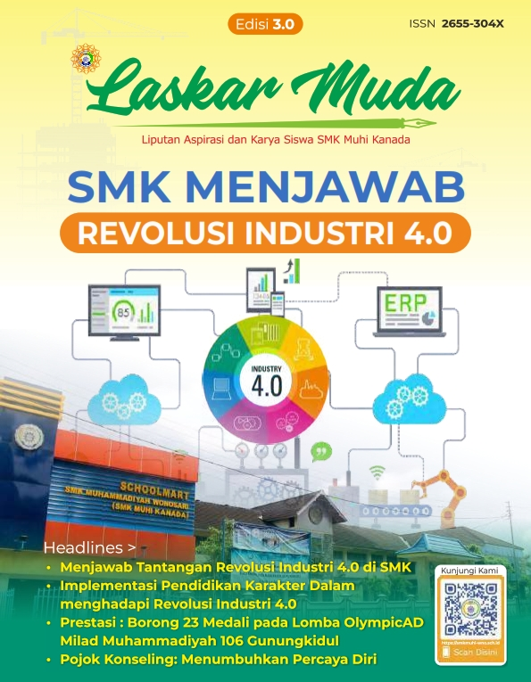

Laskar Muda Edisi 3
Mar 20, 2020Views : 1,987,807
Revolusi Industri 4.0 semakin berkembang saat ini. Hal ini ditandai dengan berkuasanya ilmu pengetahuan dan teknologi dalam seluruh aspek kehidupan. Berkembangnya teknologi secara pesat telah mengubah banyak tatanan kehidupan. Hal ini bisa dilihat dari berbagai pola hidup manusia saat ini. Contohnya dahulu orang berdagang harus berada disuatu toko atau tempat perbelanjaan namun kini, tak perlu berjalan jauh dengan adanya sistem belanja online. Kita bisa bertransaksi dimanapun dan kapanpun.
Korporasi besar yang tidak mampu menyesuaikan diri dengan kemajuan teknologi dengan sendirinya akan mudah tersingkirkan dan digantikan dengan korporasi yang lebih kompetitif dan atraktif. Tak lain, hal tersebut juga menjadi tantangan tersendiri bagi SMK. Bidang-bidang pekerjaan yang dikerjakan secara manual nantinya akan tergantikan dengan mesin, robot bahkan tergantikan oleh kecerdasan buatan. Hal ini akan berdampak buruk bagi siswa-siswi SMK di masa yang akan datang.
Lalu bagaimana SMK dalam menanggapi tantangan revolusi industri 4.0?
Menjawab tantangan tersebut, SMK harus mampu mencetak lulusan sesuai dengan yang dibutuhkan dunia industri. Kompetensi yang diberikan SMK harus disesuaikan dengan apa yang dibutuhkan industri. Untuk itu, sebagai Sekolah Berbasis Teaching Factory SMK Muhammadiyah Wonosari berusaha mendesain pembelajaran dengan memadukan sepenuhnya antara belajar dan bekerja, tidak lagi memisahkan antara tempat penyampaian materi teori dan tempat materi produksi (praktek). Hal ini berarti siswa SMK nantinya akan mengalami pembelajaran yang didesain seperti dunia usaha dan dunia industri yang sebenarnya. Untuk menunjang program tersebut. SMK Muhammadiyah Wonosari melakukan kerjasama dengan DU/DI yang sesuai dengan kompetensi di sekolah. Kerjasama ini diharapkan dapat menjembatani sekolah dalam menyesuaikan kompetensi yang diajarkan dengan kompetensi yang dibutuhkan oleh DU/DI yang ada.
Untuk dapat menjalani pembelajaran TeFa dengan baik dan siap mengadapi revolusi industry 4.0, siswa-siswa SMK juga harus memiliki karakter unggul, kemampuan berpikir tingkat tinggi dan penguasaan literasi dasar